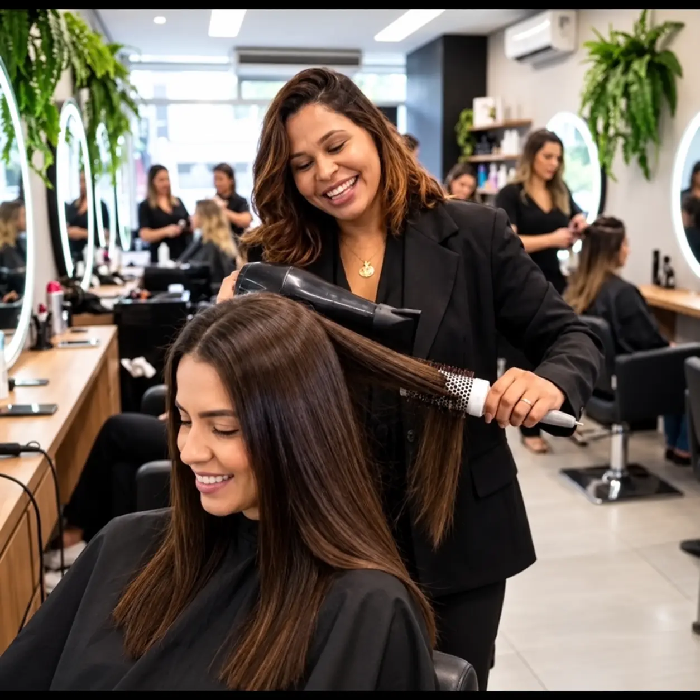

Harmonização capilar
Um cuidado completo para alinhar corte, cor, textura e tratamento ao formato do rosto e ao seu estilo.
Consultar disponibilidade →Um espaço pensado para realçar quem você é, com cuidado, técnica e uma experiência feita sob medida.
Janny Mello é especialista em harmonização capilar, alisamentos, tratamentos e mechas. Cada atendimento começa ouvindo você e entendendo o resultado que deseja.
Em um ambiente acolhedor em Camaçari, técnica e cuidado se unem para valorizar a beleza, a saúde e a personalidade dos seus cabelos.
Opções temporárias para apresentar o studio. Os nomes, detalhes e valores poderão ser atualizados conforme a tabela oficial de Janny Mello.
Um cuidado completo para alinhar corte, cor, textura e tratamento ao formato do rosto e ao seu estilo.
Consultar disponibilidade →Técnica, avaliação e acabamento para fios alinhados, brilhantes e com movimento natural.
Consultar disponibilidade →Protocolos personalizados para recuperar força, maciez, brilho e saúde dos cabelos.
Consultar disponibilidade →Iluminação pensada para valorizar seus traços, com nuances, contraste e acabamento sob medida.
Consultar disponibilidade →Escova e modelagem para realçar o corte e entregar um visual elegante em cada ocasião.
Consultar disponibilidade →Converse com Janny e encontre a combinação de serviços ideal para o resultado que você deseja.
Falar com Janny →Uma amostra visual da experiência, da técnica e do cuidado presentes em cada atendimento no studio.

“Quando você se sente bem consigo mesma, isso aparece em tudo.”
Fale diretamente com Janny pelo WhatsApp para consultar horários, serviços e valores. Atendimento em Camaçari, Bahia.